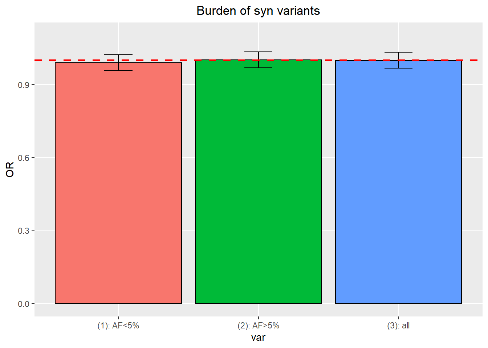
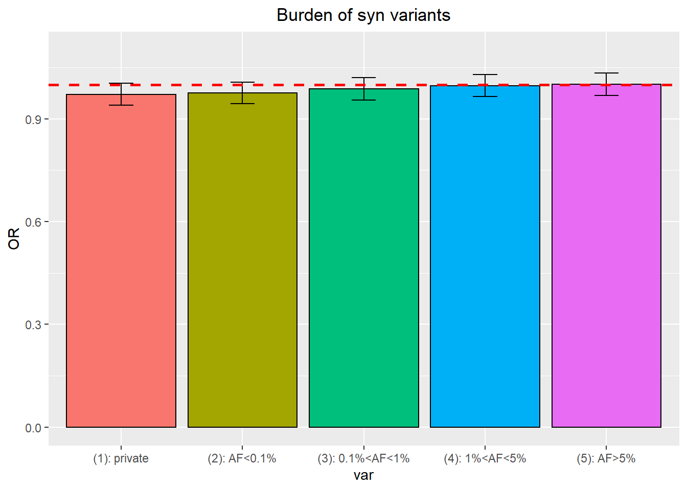
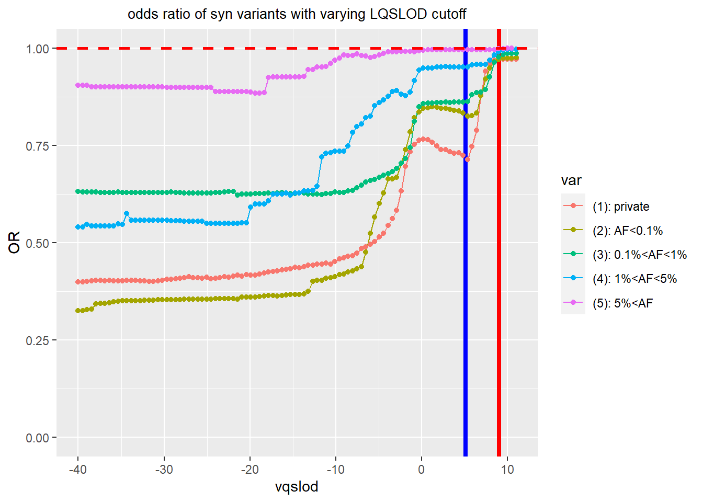

syn var in ASC new sample
Burden of syn var partitioned by AF
- filter
Consequence=="synonymous_variant - AF from
Gnomad_non_neuro_AFis used to define other categories. - When use AF cutoff, be aware of 15614 variants with zero AF going to which category
filter
Consequence=="synonymous_variantPrivate variants are defined as variants with total allele count equal to 1 in parents calculated as
Transmitted_proband_parents+Untransmitted_proband_parents=1AF from
Gnomad_non_neuro_AFis used to define other categories.

Burden of syn var with VQSLOD filter
VQSLOD is short for variant quality score log-odds.
at each VQSLOD cutoff, variants with VQSLOD score less than cutoff is chosen.
> summary(ASC_new_sample %>% filter(Consequence=="synonymous_variant") %>% select(VQSLOD)%>%pull())
Min. 1st Qu. Median Mean 3rd Qu. Max.
-39450.00 -5.49 -2.65 -40.90 -1.93 1.91Kyle looked at using a VQSLOD cutoff of 3.75, but then brought it up to 5.13 after trying a similar calibration procedure with non-coding indels.filter
Consequence=="synonymous_variantPrivate variants are defined as variants with total allele count equal to 1 in parents calculated as
Transmitted_proband_parents+Untransmitted_proband_parents=1AF from
Gnomad_non_neuro_AFis used to define other categories.

Burden of syn var with QD/ReadPosRankSum/SOR filter
Consider QD, ReadPosRankSum, SOR combined filters.
filter used for indels by Kyle:
Kyle suggested
QD >= 3 & AS_SOR <= 3 & AS_ReadPosRankSum >= -8fix
QD >= 3 & AS_SOR <= 3and varyAS_ReadPosRankSumand variants with score larger than threshold are chosenvertical line is
AS_ReadPosRankSum = -8
filter used for SNPs by Kyle:
QD >= 1 & AS_SOR <= 3 & AS_ReadPosRankSum >= -0.8 for SNPs suggested by Kyle. Fix two of them and vary one.
Vary AS_ReadPosRankSum
fix
QD >= 1 & AS_SOR <= 3and varyAS_ReadPosRankSumand variants with score larger than threshold are chosenvertical line is
AS_ReadPosRankSum = -0.8

vary QD
fix
AS_SOR <= 3 & AS_ReadPosRankSum >= -0.8and varyQDand variants with score larger than threshold are chosenvertical line is
QD=1
vary As_SOR
fix
QD >= 1 & AS_ReadPosRankSum >= -0.8and varyAS_SORand variants with score less than threshold are chosenvertical line is
AS_SOR=3

This R Markdown site was created with workflowr